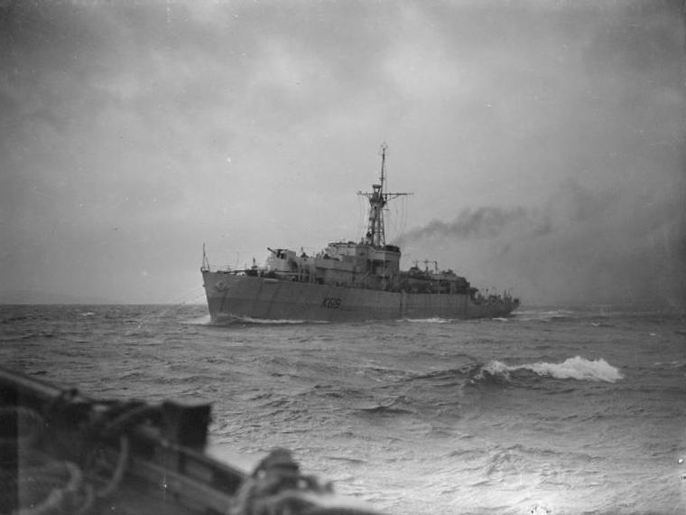
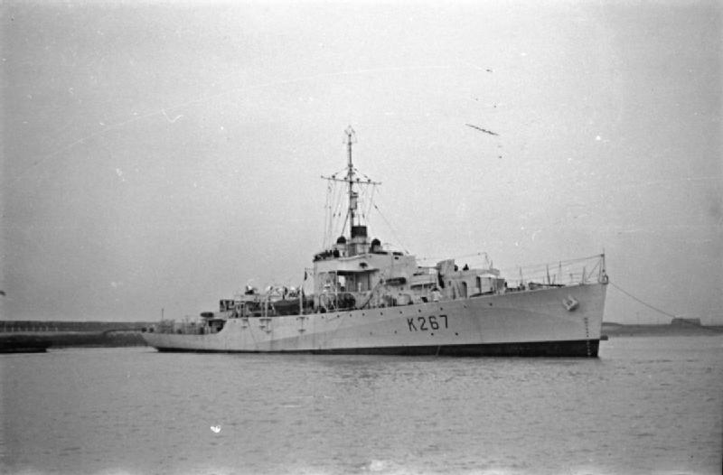
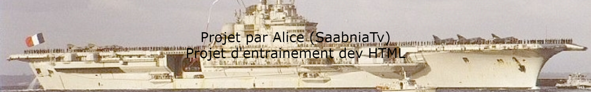

| Les Fregates | |||
|---|---|---|---|
|  | Classe Loch, HMS Loch Glendhu |
Les Loch constituaient globalement des versions améliorées des River. Avec des dimensions plus généreuses, un armement plus conséquent, et des coques construites en sections préfabriquées. 30 verront le jour au total mais une dizaine sortiront trop tard pour participer à la guerre (fin 1945 et début 1946). Au total 26 autres seront reconvertis en navires AA de la classe « Bay », et 54 annulés avant construction. |
Longueur : 93,57 m Tirant d'eau : 3,7 m Deplacement : 1 450 t A pleine charge : 2 260 t 2 hélices, 2 mot. VTE, 2 chaudières Admiralty Puissance : 5 500 chevaux Vitesse : 19.5 noeuds |
|  | Classe River, HMS Frome |
Les Frégates de la classe « River », portaient, comme leur nom l’indiquait, des noms de fleuves et de rivières de Grande-Bretagne. Il s’agissait tout d’abord d’un type de navire que l’on croyait disparu depuis les années 1860, en fait à l’origine du croiseur. Les Frégates modernes étaient une appellation pour un type de navire intermédiaire entre la corvette ou l’aviso et le destroyer. Une classification qui tient toujours à l’heure actuelle. Ces frégates furent lancées en 1941 (peu), 1942 et 1943 et terminées pour la plupart entre 1942 et 1944. Elles jouèrent un rôle d’escorte et de chasse au U-Bootes très important au milieu de l’Atlantique. Il y eut en vérité peu de pertes : 7 au total. Ces navires robustes furent pour la plupart revendus à de nombreux pays, et certains étaient encore en service dans les années 80. Les River connurent une succession sous la forme des frégates de la classe « Loch » en 1944 et « Bay » en 1945 (30 et 25 unités). |
Longueur : 91,84 m Tirant d'eau : 3,6 m Deplacement : 1 310 t A pleine charge : 1 920 t 2 hélices, 2 machines à triple expansion (MTE), 2 chaudières Admiralty Puissance : 5 500 chevaux Vitesse : 20 noeuds |
Retrouver la page complète sur Github UwU
Vous pouvez me contacter sur Discord via mon # = Alice(SaabniaTv)#0001 ou via mon serveur discord
{kind=link}
{kind=link}